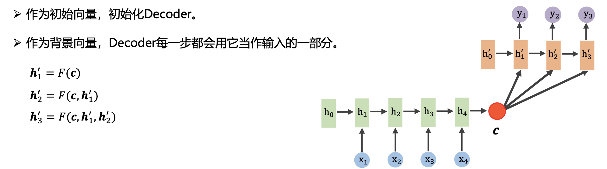
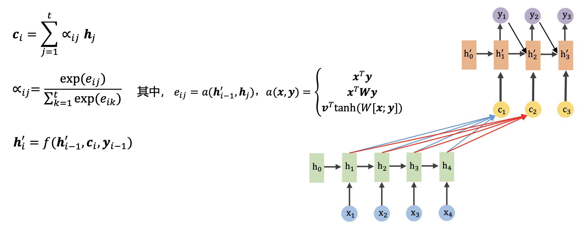
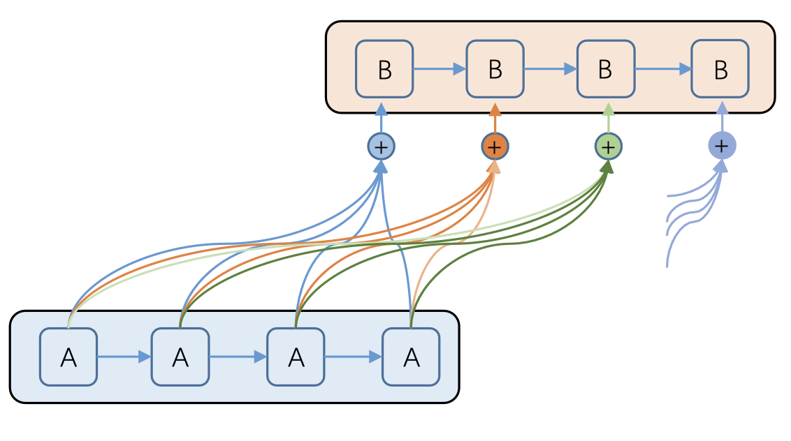
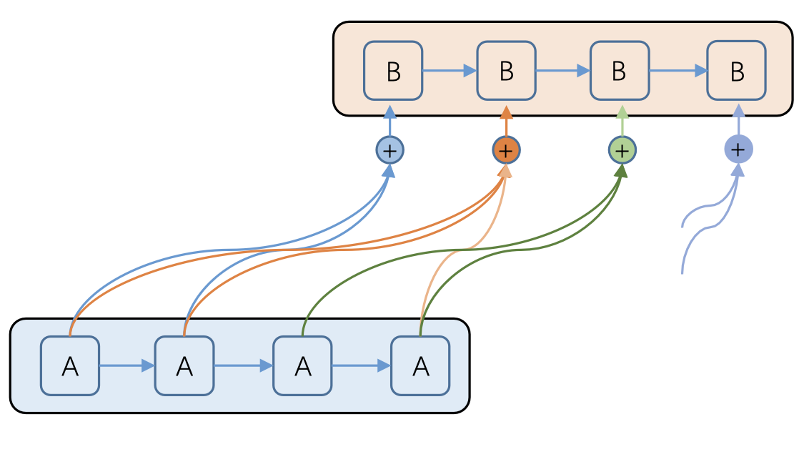
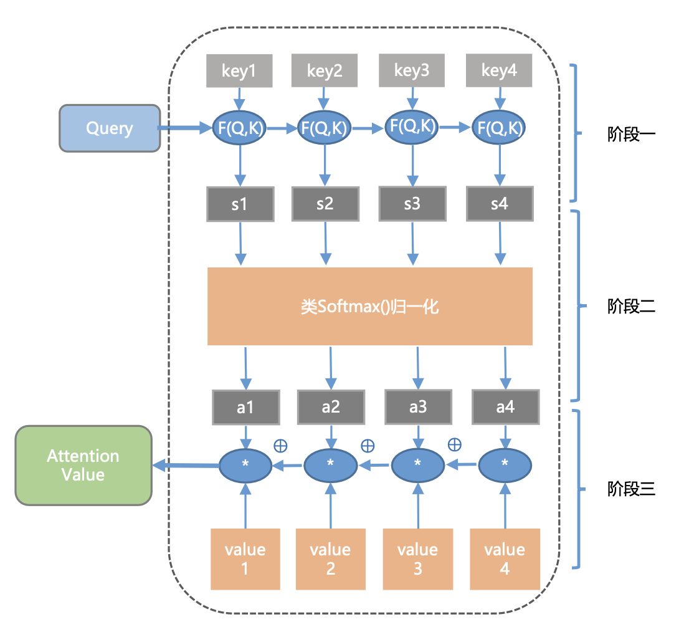
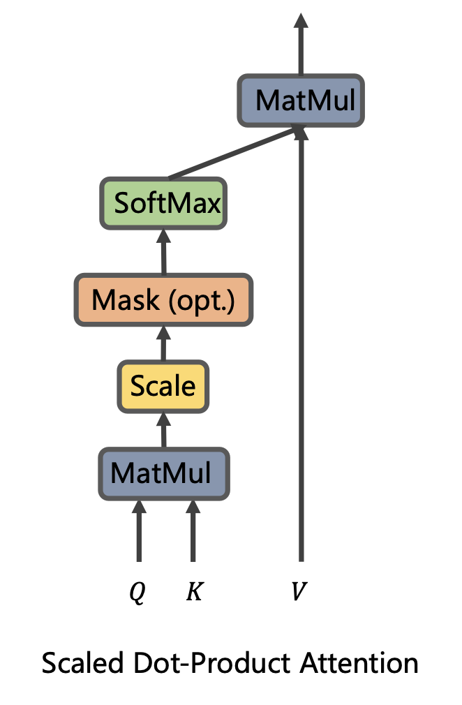
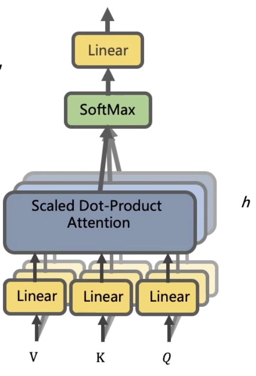
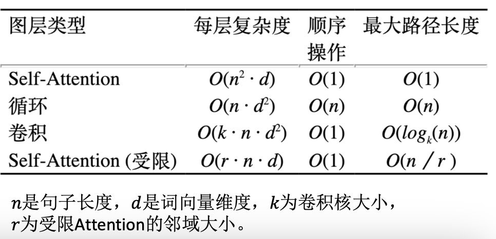

背景
起源
- 模拟人的大脑思考机制，每时每刻，人脑都在接受巨量的信息。人脑的容量无法同时处理如此海量的信息，因此，人会将大部分的脑力资源集中在部分需要特别关注的信息点上。
- attention模型最早应用在seq2eq模型上。
Encoder-Decoder
- 这个框架可以看做是深度学习领域的研究模式，应用场景十分的广泛，可看作是由一个句子（或是篇章）生成另一个句子（或是篇章）的通用处理框架。
- Encoder: 对输入句子Source进行编码，将句子通过非线性的变换转化成一个中间的语句表示，即\(C=F(source)\)
- Decoder: Decoder: 根据中间语义表示𝐶𝐶和之前的已经生成的历史信息\(y_{1},y_{2},…,y_{t-1}\)来生成\(t\)时刻的内容，即\(y_{t}=G(C,y_{t-1})\)
- 对比
- RNN：无法并行，由于误差只能有效的传递到前两个历史时刻，无法很好的学习到全局的结构信息。
- CNN：很容易并行，容易捕捉到一些局部结构信息。
- 注意力机制：注意力机制直接利用整个Encoder序列对当前的目标进行计算，因此能够很好的获得全局结构信息。同时，对Decoder中每个单词的注意力计算相互之间没有依赖关系，因此也能够进行并行计算。
注意力机制
基本结构


- 上图中的\(\alpha_{ij}\)就是描述的\(c_{i}\)对\(h_{j}\)的注意力大小
- 可以看到\(\alpha_{ij}\)是通过对\(e_{ij}\)softmax操作得来的。\(e_{ij}\)。这边用\(h_{i-1}^{’}\)的原因在于，我们要求的是\(h_{i}^{’}\)，我们已知的是\(…, h_{i-2}^{’}, h_{i-1}^{’}\)，所以我们就用最近的\(h_{i-1}^{’}\)和source中的每个\(h_{i}\)通过一个激活函数\(a(x,y)\)，计算彼此之间的关联度。关联度归一化后就变成了概率信息。
- 最后解码的时候利用到的是\(c_{i}\)，而不是原先的一个固定的\(C\)
分类
- SoftAttention
- 由于每一个\(c_{i}\)都是通过对原始输入\(x\)在输出侧的\(y_{i}\)上的一个概率分布来进行计算的，因此获得是当前需要解码位置在原始输入序列上的一个注意力分布，可以被嵌入到模型里面去，直接训练。

- HardAttention
- 是一个随机的过程，它不会选择整个encoder的输出作为其输入（注意看下图decoder层每个输出到encoder的连接，不是全连接），而是会依据概率来采样encoder端的某些隐藏层作为其attention。为了实现梯度的反向传播，需要使用蒙特卡洛的方法来估计模块的梯度。

- GlobalAttention
- 与传统的Attention模式一样。所有的encoder端的hidden state都被用于计算背景向量的权重。
- LocalAttention
- 将Soft & Hard Attention结合起来，每次先为decoder端当前的词，预测一个source端对齐位置（aligned position）\(p_{t}\)。然后基于\(p_{t}\)选择一个窗口，用于计算背景向量\(c_{t}\)。
- $$p_{t}=S\cdot sigmod(v_{p}^{t}tanh(W_{p}h_{t}))$$
- $$a_{t}(s)=align(h_{t},h_{t}^{'})exp(-\frac{(s-p_{t}^{2})}{2\sigma^{2}})$$
- 将Soft & Hard Attention结合起来，每次先为decoder端当前的词，预测一个source端对齐位置（aligned position）\(p_{t}\)。然后基于\(p_{t}\)选择一个窗口，用于计算背景向量\(c_{t}\)。
核心思想
- 本质上，Attention机制是对source中元素的value（指代source中的\(h_{i}\)或\(x_{i}\)）值进行加权求和，而query（上文中的\(h_{i}^{’}\)）和key（source中的\(h_{j}\)）用来计算对应value的权重系数
- $$attention(query,key)=\sum_{i=1}^{t}sim(query,key_{i})*value_{i}$$
- 聚焦的过程体现在权重系数的计算上，权重越大越聚焦到其对应的value上，即权重代表了信息的重要性，而value是其对应的信息。
计算步骤
- 阶段一：根据query<->key计算相似性或相关性
- 阶段二：原始分值归一化、概率化
- 阶段三：根据权重系数对value进行加权求和

-
$$Attention(Q,K,V)=softmax(\frac{QK^{T}}{\sqrt{d_{k}}})V$$
- $$Q\in R^{n\times d_{k}}$$
- $$K\in R^{m\times d_{k}}$$
- $$V\in R^{m\times d_{v}}$$
- 公式理解
- 如果忽略激活函数softmax的话，那么事实上它就是三个\(n\times d_{k}\), \(d_{k}\times m\), \(m\times d_{v}\)的矩阵相乘，最后的结果也是一个\(n\times d_{v}\)的矩阵。即\(n\times d_{k}\)的序列\(Q\)编码成了一个新的\(n\times d_{v}\)
-
$$Attention(q_{t},K,V)=\sum_{s=1}^{m}\frac{1}{Z}exp(\frac{
- \(K\)和\(V\)是一一对应的，每次拿一个\(q_{t}\)和各个key做内积并softmax，得到\(q_{t}\)与各个\(v_{s}\)的相似程度，然后加权求和，得到一个\(d_{v}\)的向量。
- 其中，因子\(\sqrt{d_{k}}\)起到调节的作用，使得内积不至于太大（太大的话softmax就是非0即1了，不够soft）
- 这个定义只是注意力的一种形式，还有一些其他的选择，比如query和key的运算方式并不一定是点乘，还可以是拼接后再内积一个参数向量，甚至是权重都不一定要归一化等。

扩展
-
Mutil-Head Attention
- Mutil-Head Attention是Google提出的新概念，是Attention机制的完善，不过从形式上看，它其实就是把Q,K,V通过参数矩阵映射一下，然后再做Attention，把这个过程重复做了h次，结果拼接起来就行了。

- $$head_{i}=Attention(QW_{i}^{Q},KW_{i}^{K},VW_{i}^{V})$$
- $$W_{i}^{Q}\in R^{d_{k}\times \breve{d}_{k}},W_{i}^{K}\in R^{d_{k}\times \breve{d}_{k}},W_{i}^{V}\in R^{d_{v}\times \breve{d}_{v}}$$
- $$MultiHead(Q,K,V)=Concat(head_{1},...,head_{n})$$
- 最后得到一个\(n\times (h\breve{d}_{k})\)的序列，所谓的“多头”，就是多做几次同样的事情（参数不共享），然后把结果进行拼接。
-
Self Attention
- 传统的Attention是基于source端和target端的隐变量计算的。得到的结果是source端的每个单词与target端的每个词之间的依赖关系。
- Self Attention分别在source端和target端进行，但是分别在两端捕捉自身的词与词之间的依赖关系，然后再把source端得到的self Attention加入到target端得到的self Attention中，捕捉source端和target端词与词之间的依赖关系。
- Self Attention要比传统的Attention Mechanism效果好，主要原因之一是：传统的Attention机制忽略了source/target端自身的词之间的依赖关系。
- 在Google的论文中，大部分的Attention都是Self Attention。
- Self Attention就是\(Attention(X, X, X)\), \(X\) 是前面说的输入序列，也就是在序列内部做Attention，寻找序列内部的联系。
- Google论文的主要贡献之一就是它表明了内部注意力在机器翻译（甚至在一般的seq2seq）任务的序列编码上是相当重要的，而之前关于seq2seq的研究基本都只是把注意力机制用在解码端。
-
Posting Embedding
- Attention模型并不能捕捉序列的顺序，换句话说，如果将K,V按行打乱顺序（相当于句子中的词序打乱），那么Attention模型的结果还是一样，这就表明了它顶多是一个非常巧妙的BOW模型。
- 顺序对于时间序列至关重要，如果学习不到顺序信息，那么效果会大打折扣。
- Position Embedding将每个位置编号，然后每个编号对应一个向量，通过结合位置向量和词向量，就给每个词都引入了一定的位置信息，这样Attention就可以分辨出不同位置的词了。
- 以前的RNN，CNN模型中都出现过Position Embedding，但是那些模型本身就能够学习到序列的位置信息，所以Position Embedding(PE)不是必须的。但是在Attention模型中，PE是位置信息的唯一来源，因此它是模型的核心成分之一，并非仅仅是简单的辅助手段。
- 在之前的PE中，基本都是根据任务训练出来的向量，而Google直接给出了一个构造PE的公式：
- $$PE_{2i}(p)=sin(\frac{p}{10000^{\frac{2i}{d_{pos}}}})$$
- $$PE_{2i+1}(p)=cos(\frac{p}{10000^{\frac{2i}{d_{pos}}}})$$
- Position Embedding 本身是一个绝对位置的信息，但是在语言中，相对位置也很重要，Google选择前述的位置向量公式一个重要的原因是：由于有\(sin(\alpha +\beta )=sin\alpha cos\beta +cos\alpha sin\beta\)和\(cos(\alpha +\beta )=cos\alpha cos\beta -sin\alpha sin\beta\)，这表明位置\(p+k\)的向量可以表明位置为\(p\)的向量的线性变换，这提供了表达相对位置的可能性。
- 结合位置向量和词向量的几个可选方案：可以把他们拼接起来作为一个新向量，也可以把位置向量定义为跟词向量一样大小，然后两者加起来。Facebook的论文和Google的论文中用的都是后者。直觉上相加会导致信息损失，似乎是不可取，但是实验证明相加也是很好的方案。
缺点
- Attention层的好处就是能够一步到位的捕捉全局的联系，因为它直接把序列两两比较（代价是计算量变为\(O(n^{2})\)）。相比之下，RNN需要一步步地递推才能捕捉到，而CNN需要通过层叠扩大感受野，这是Attention层的明显优势。

- Attention虽然跟CNN没有直接联系，但是事实上充分的借鉴了CNN的思想，比如Multi-Head Attention就是Attention做多次然后拼接，这个CNN的多个卷积核思想是一致的，论文用到的残差结构都源于CNN网络。
- 无法对位置信息进行很好的建模，PE的引入无法从根本上解决这个问题。
- 并非所有的问题都是需要长程的全局的依赖，也有很多的问题只是依赖于局部结构，这时候用纯的Attention不是很好。所以论文中还是提到了一个受限Attention的概念。